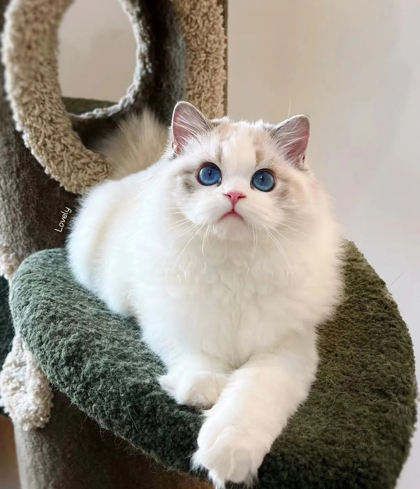

Ragdoll originated in the United States and is a hybrid pet cat. It is one of the biggest and heaviest cats in existence. The head is wedge-shaped, the eyes are big and round, the coat is rich, the limbs are long and fleshy, the tail is long, the body is soft, and the coat color is key color, glove color or two-color, etc. They are gentle, quiet, and friendly to people. Its beauty and elegance are very similar to the dog's Puppy cat, and it is also called "fairy cat" and "puppy cat". The special appearance and gentle personality are one of the greatest characteristics of a Ragdoll.
In this article ↘
The ragdoll cat breed is relatively new. It was developed in California
in the 1960s. A cat breeder named Ann Baker wanted to create a beautiful
cat with a loving personality. She started by breeding a domestic
long-haired, white cat of unknown origin named Josephine with several
Burmese-like cats.
Though it took a few generations, Baker eventually produced the first
cats she called ragdolls. These cats were appreciated for their
non-matting fur, large size, and outgoing personalities.
The Cat Fanciers Association (CFA) began registering ragdolls in 1993.
Ragdolls are consistently one of the most popular cat breeds registered
by the CFA.
The big, beautiful ragdoll cat does not reach its full size, about 15 pounds on average, until about four years of age. With its easygoing personality and social temperament, the ragdoll is ready to be friends with just about anyone. Ragdoll cats are very kind to people, have zero aggression toward people, and are very loyal to their owners, so many people are willing to buy a puppet cat and raise it at home to accompany the elderly and children, especially children. It will quietly lie beside the sleeping children and watch over them.
It is characterized by a large and wedge-shaped head, flat top of the head, dark blue eyes, a round snout, a slight depression on the short nose, some "V"-shaped markings on the face, and a long coat on the neck. It belongs to the category of hairy cats. Ragdoll cat's hair is very long, and it feels very smooth and soft, especially when it walks gracefully. Its hair is not only a single color, but also matched with other colors, which is perfect. Its hair is fluffy and looks very textured.
Purebred ragdoll kittens are born solid white due to a genetic mutation. Their coats begin to develop colors and patterns around two months of age but don't fully develop their coloration for about two years.
A ragdoll's medium-length coat is silky-soft and often compared to rabbit fur. It is considered a "pointed breed," meaning its body is lighter colored than its points (face, ears, legs, and tail). Its fur is somewhat longer and thicker around its neck, giving the appearance of a mane. Their ears are relatively small and slightly rounded.
These large cats are not overly muscled; they are rather soft and quite flexible.